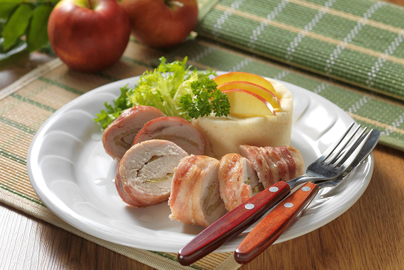

Morčacia roláda s jablkami a krupicou so syrom
Kto by povedal, že príprava tohto špeciálneho mäsového pokrmu môže byť taká jednoduchá?

Ingrediencie
-
700 gmorčacie prsia
-
2 kskyslé jablko
-
12 plátkovslanina
-
2 hrnčekyplnotučné mlieko
-
1 hrnčekkrupica
-
100 gsmotanový syr
-
podľa chutisoľ, mleté čierne korenie
Postup
-
1Morčacie prsia nakrájame na 4 plátky, potom ich po jednom narežeme na polovicu, avšak nie celkom na polovicu a otvoríme.
-
2Jablká umyjeme, prekrojíme na polovicu, zbavíme jadrovníka a nakrájame na tenké plátky. Rúru predhrejeme na 220°C.
-
3Morčacie prsia osolíme a okoreníme, obložíme plátkami jabĺk, pevne zvinieme a zabalíme vždy do 3 plátkov slaniny.
-
4Rolády preložíme do pekáča, pečieme pod alobalom asi 20 minút, potom pekne do zlato-hneda bez alobalu ešte 15 minút.
-
5Na prípravu prílohy privedieme mlieko so soľou do varu, prisypeme krupicu a na miernom ohni za stáleho miešania varíme, kým nezhustne, asi 5 minút. Pred stiahnutím z ohňa vmiešame smotanový syr, aby bola krupica ešte jemnejšia a krémovejšia.
-
6Pri podávaní vytvarujte syrovo-krupicový puding na tanier a navrch položte na plátky nakrájanú roládu.
Bon Appétit
Dúfam, že sa vám tento recept páčil a prinesie vám do kuchyne mnoho radosti a chutných momentov. Ak ho vyskúšate, podeľte sa so svojimi dojmami a nechajte nám komentár. Prajem dobrú chuť a veľa úspechov pri varení!